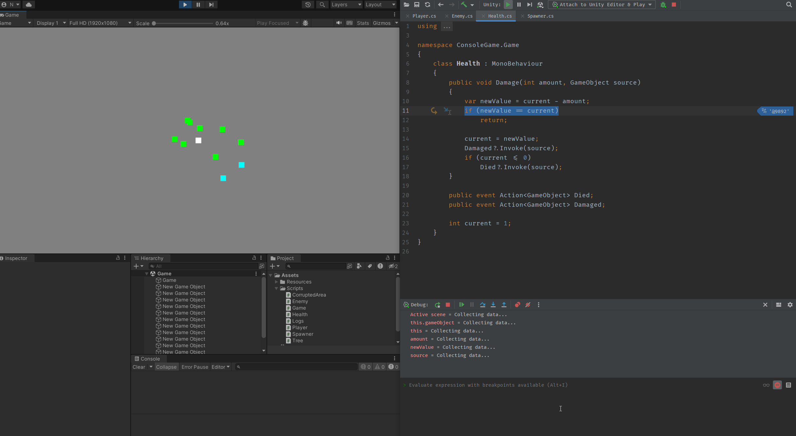

Devlog
The holidays have come to an end, and it’s time to get back to work.
Here’s a quick recap of yesterday’s important points:
Define a clear outcome for each work session.
Unfortunately, I completely failed on this point as I forgot to set a goal for myself when I started.
Stick to a console application until the core progression loop is complete.
On Track.
Today was an interesting day as I had discussions on how to approach my game and why I wasn’t making progress despite knowing what I needed to do. Consequently, I focused on working towards the core game loop that I had in mind.
To develop the game, I took a mixed approach using both the console application and Unity. I initialized my entire game through code, and Unity handled assets (loaded via Resources) and rendered my game.

Although I achieved the base of what I wanted, I have almost no idea how it works since I ran out of time. Nevertheless, I unintentionally managed to stay on track with my goal for the day, and core iterations between entities in the game are working.
I side-tracked a little with environment optimization and even broke Unity, but I believe it should be fine. Since this happened, I think I should keep one of yesterday’s strategies.
My next key strategies are:
- Define a clear outcome for each work session.
- Define a pre-weekend milestone.
I decided to split the posts for better organization, but I will keep reviewing the strategies to maintain some sort of connection between them.